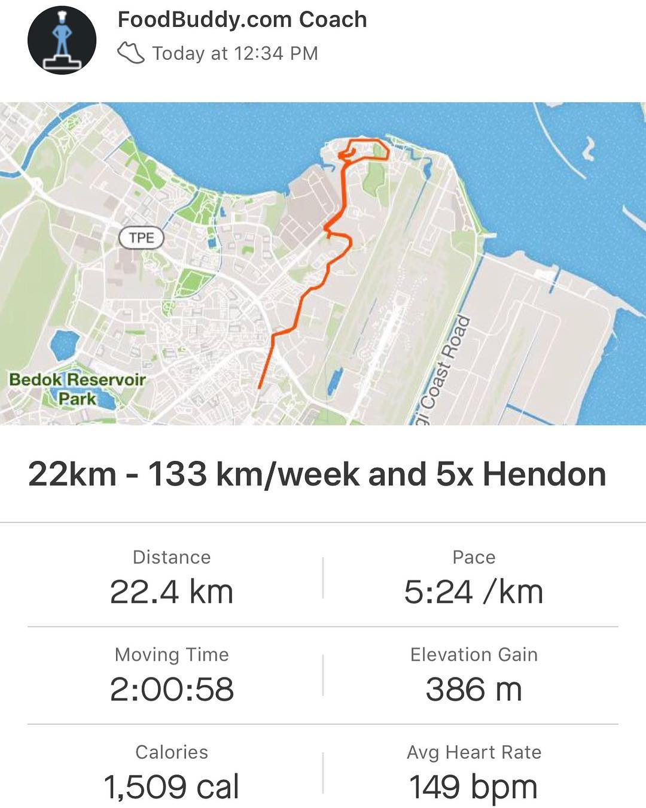

What a great chill Sunday it is in Singapore! Only +27 😄 well, lots of clouds ☁️ so it feels great! Enjoyed my usual power breakfast 💪🏼: oatmeal porridge with chia and flax seeds - great source of carbs, proteins and good fats and fruit plate, so (already) usual 22 km felt easier than usual! Closing this week at 133 km total run 🏃🏽 and starting the final countdown till 1️⃣0️⃣0️⃣ miles trail race in Chiang Mai, Thailand - exactly 1 month left! __ #powerbreakfast #superfood #homemadefood #breakfastideas #swimbikerun #triathlontraining #ironmantri #triathlont #ultrarunning #runtheworld #ultrarunner #foodsgram #trailrunning #trailrunner #oatmealbowl #chiaseeds #flaxseed
2018-10-07 18:25:09
Back to main page